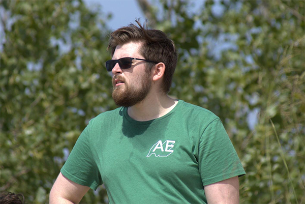

About Me

Basics
My name is Andrew Allan! I am 22 years old and was born in Bridgeport, Connecticut. I have lived in Michigan for nearly 20 years, however, I currently live in East Lansing, Michigan.
Education
I am a Senior at Michigan State University majoring in Information Science. My degree focuses on creating human centered design. This mean that I will design prototypes based on users input. This could be something physical like a 3D printed phone holder or digital like a blog website.
Work
I work at Loc Performance as an IT Intern.
My duties include:
- Supporting the local and corporate IT teams in daily tasks
- Maintaining and supporting all computer systems, networks, printers, phones, video systems, etc. throughout the plant
- Organizing and maintaining IT resources onsite
- Investigate and solve any IT related issues/problems
- Any other duties assigned by the IT Manager
Hobbies
In my free time I enjoy playing hockey with friends and playing video games like Super Smash Brother Ultimate, Elden Ring, and Call of Duty Black Ops 3. I am actually a tournament organizer for my local Super Smash Brother Ultimate club at MSU. I also love to bike, party occasionally, and watch Anime. The current Anime I am watching is Jujutsu Kaisen.